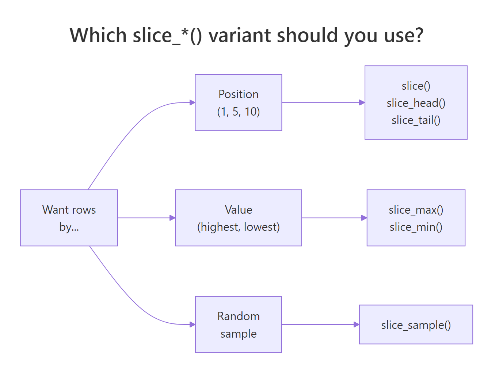
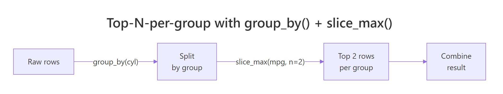

dplyr arrange(), slice(), and top_n(): Get Exactly the Rows You Want
In dplyr, arrange() sorts rows, slice() picks rows by position, and the slice_*() family grabs rows by value or at random. Together they answer one question analysts ask every day: "give me exactly these rows, in this order."
How does arrange() sort rows in dplyr?
When you need to rank, compare, or just eyeball the biggest and smallest values, sorting is the first move. arrange() reorders rows by one or more columns — ascending by default, wrap a column in desc() for descending. Here are the fastest cars in mtcars, ranked by quarter-mile time (smaller qsec = faster):
The Ford Pantera L comes out on top with a 14.5-second quarter mile, followed closely by the Maserati Bora at 14.6. Notice the row names stay attached — arrange() moves whole rows, not just the sort column. That's a key property: every column in every row travels together, so your table remains consistent after sorting.
slice() or head() on the result.Try it: Sort iris so the longest Sepal.Length comes first. Save to ex_iris_sorted and show the top 3 rows.
Click to reveal solution
Explanation: desc() flips the sort direction for that single column — cleaner than negating the values.
How do you sort by multiple columns at once?
Single-column sorting is fine until you hit ties. What if you want all four-cylinder cars first, then six-cylinder, then eight — and within each cylinder group, the highest-mpg car on top? Pass multiple columns to arrange() and dplyr sorts by the first column, then uses the second as a tie-breaker, and so on. The order you list the columns matters.
The four-cylinder block leads, and within it the Toyota Corolla (33.9 mpg) sits at the top. Scroll further and you'd see six-cylinder cars start, then eight-cylinder — always sorted high-to-low by mpg inside each group. This is exactly how SQL's ORDER BY col1, col2 works, and it's how you build leaderboards that respect natural categories.
arrange(cyl, desc(mpg)) to arrange(desc(mpg), cyl) gives a completely different result — the overall highest-mpg cars first, regardless of cylinder.Try it: Sort the starwars dataset by species alphabetically, then within each species by mass descending. Save to ex_sw_sorted.
Click to reveal solution
Explanation: NA values go to the end by default. Use arrange(species, desc(mass), .na.last = FALSE) if you want them first.
What's the difference between arrange() and base R's order()?
If you've used base R you already know order() — it returns the indices that would sort a vector, and you use those indices to subset the data frame. arrange() skips that indirection: it takes the whole data frame, sorts it, and hands it back. Same result, half the keystrokes and none of the bracket gymnastics.
Both lines produce the same sorted table, confirmed by identical() on the row names. The dplyr version reads left-to-right like English — take mtcars, arrange by cyl then descending mpg — while the base R version needs you to parse nested bracket syntax and remember that -mtcars$mpg is the trick for descending. For interactive analysis, arrange() wins on readability every time.
Try it: Rewrite iris[order(-iris$Petal.Length), ][1:3, ] using arrange() + slice() or head(). Save to ex_base_rewrite.
Click to reveal solution
Explanation: head(3) and slice(1:3) are interchangeable here — both grab the first three rows after sorting.
How do you pick rows by position with slice()?
Sometimes you don't care about values — you just want "row 5" or "rows 10 through 15" or "everything except the first row." That's what slice() does: it subsets rows by their integer position in the table. It accepts a single index, a range with :, a vector with c(), or negative indices to exclude rows.
That's the first five rows of mtcars — position 1 through 5, in their original order. To grab specific non-contiguous rows, pass a vector: slice(c(1, 3, 5)). To drop the first row instead of keeping it, use a negative index: slice(-1). And to drop several, slice(-c(1, 2)). The pattern mirrors base R indexing, but it returns a proper tibble and plays nicely with pipes.
filter(), not slice(). Mixing these up is a common early-stage dplyr confusion.Try it: Extract rows 10 through 15 from iris. Save to ex_iris_slice.
Click to reveal solution
Explanation: 10:15 generates the integer sequence c(10,11,12,13,14,15) and passes it to slice().
When should you use slice_head(), slice_tail(), slice_min(), slice_max()?
dplyr ships a whole family of slice_*() helpers — each one answering a different flavor of "give me rows." They spare you from writing arrange() |> head() every time and they handle ties and sampling gracefully. The right choice depends on how you want to pick:

Figure 1: Choosing the right slice_() variant based on how you want to pick rows.*
| Function | Picks rows by... | Typical use |
|---|---|---|
slice_head(n = 5) |
First N positions | First 5 rows of a table |
slice_tail(n = 5) |
Last N positions | Last 5 rows of a table |
slice_min(col, n = 5) |
N smallest values of col |
Cheapest 5 products |
slice_max(col, n = 5) |
N largest values of col |
Heaviest 5 characters |
slice_sample(n = 5) |
Random N rows | Bootstrap sample, data check |
Here's slice_max() in action — no arrange() needed:
Five lines of output, ranked heaviest first, with Jabba unsurprisingly dominating at 1358 kg. Behind the scenes slice_max() sorts by mass descending and takes the top 5 — but the verb name reads directly as intent: slice the max. Prefer these helpers over arrange(desc(mass)) |> head(5) when you want self-documenting code.
slice_sample(n = 10) on a 100,000-row dataset gives you a random preview — far more representative than the first 10 rows, which often share a common source or timestamp.Try it: Get the 3 shortest Star Wars characters by height. Save to ex_shortest_sw.
Click to reveal solution
Explanation: slice_min() is the mirror image of slice_max() — smallest values first.
How do you get the top N rows per group?
Here's the pattern that makes slice_max() genuinely powerful: combine it with group_by() and you get top-N-per-group in one short pipeline. "Top 2 most fuel-efficient cars within each cylinder class" — that's a question analysts ask constantly, and it would take an ugly loop in base R.

Figure 2: Getting the top rows within each group by combining group_by() and slice_max().
Six rows total — two per cylinder class, ranked highest mpg first within each group. The Toyota Corolla leads the 4-cylinder class, a Hornet tops the 6-cylinder, and a Pontiac leads the 8-cylinder. The ungroup() at the end is a good habit: it clears the grouping so downstream operations act on the whole table.
slice_max(n = 2) returns all of them by default. Set with_ties = FALSE to enforce an exact count and break ties arbitrarily. Use this when downstream code expects a fixed row count.Try it: Get the 2 tallest characters per species from starwars, ignoring rows with missing height. Save to ex_top_by_species.
Click to reveal solution
Explanation: The grouped slice_max() runs independently inside each species, returning up to 2 rows per group. Species with only one character (like Aleena) return just that one.
Is top_n() still the right way to get the top rows?
If you've read older dplyr tutorials you've seen top_n() — a function that grabs the top N rows by some column. It still works, but as of dplyr 1.0.0 (May 2020) it's officially superseded by slice_max() and slice_min(). Superseded means "still supported forever, but not the recommended choice anymore" — new code should use the slice family.
Both lines return the three highest-mpg cars. Why was top_n() superseded? Two reasons: its argument order (n first, then the column) was inconsistent with the rest of the slice family, and slice_max() offers explicit with_ties and prop arguments for controlling ties and proportional sampling. The migration is a one-for-one replacement — no behavior changes to worry about.
Try it: Rewrite mtcars |> top_n(4, hp) using slice_max() and confirm the results match. Save to ex_top_hp.
Click to reveal solution
Explanation: Same rows, cleaner syntax. Note the last two cars tie at 245 hp — slice_max() returns both by default (with_ties = TRUE).
Practice Exercises
These capstones combine arrange, slice, and group_by patterns. Use my_* prefixed variables so exercise code doesn't clobber tutorial state.
Exercise 1: Second-heaviest per species
In starwars, find the second-heaviest character of each species (not the heaviest — exactly the second). Ignore rows with missing mass. Save to my_second_heaviest with columns name, species, and mass.
Click to reveal solution
Explanation: After sorting within each group (.by_group = TRUE), slice(2) picks the row in position 2. Species with only one member are silently dropped — that's the correct behavior here since "second-heaviest" is undefined for a group of one.
Exercise 2: Bottom 3 and top 3 in one table
From mtcars, build a single table containing the 3 worst-mpg and 3 best-mpg cars, with a rank column marking "bottom" or "top". Save to my_extremes.
Click to reveal solution
Explanation: bind_rows() stacks two tables vertically. Adding a rank column with mutate() before binding keeps each slice's origin traceable. Note the tie at 10.4 mpg produces 3 rows in the bottom even though we asked for 3 — ties include extra rows by default.
Exercise 3: Random sample stratified by group
Take a random sample of 2 cars from each cylinder group in mtcars, reproducible with a seed. Save to my_stratified_sample. Result should have 6 rows total (2 per cylinder class × 3 classes).
Click to reveal solution
Explanation: slice_sample() inside a grouped pipeline samples independently within each group — the same stratification trick used in train/test splits. set.seed() makes the result reproducible across runs.
Complete Example
Here's a realistic end-to-end pipeline that threads every verb from this tutorial together. Question: what are the 3 tallest Star Wars characters in each homeworld that has at least 2 characters, sorted by homeworld and height?
Every line corresponds to one intent: drop rows with missing height or homeworld, for each homeworld, keep only homeworlds with 2+ characters, take the 3 tallest, sort nicely, clean up grouping, show just the columns we care about. That's the tidyverse in its natural habitat — each verb small and focused, the pipeline reading top to bottom like a recipe.
Summary
| Verb | What it does | Typical use | |
|---|---|---|---|
arrange(col) |
Sorts rows ascending by col |
Alphabetize a list | |
arrange(desc(col)) |
Sorts rows descending | Leaderboard, highest first | |
arrange(a, desc(b)) |
Multi-column sort with tie-break | Category then metric | |
slice(1:5) |
First 5 rows by position | Preview head of data | |
slice(c(1, 3, 5)) |
Specific positions | Pick odd-indexed rows | |
slice(-1) |
Drop rows by position | Remove header row | |
slice_head(n = 5) |
First N (same as head) | Self-documenting version of head | |
slice_max(col, n = 5) |
Top N by value | "Top 5 by revenue" | |
slice_min(col, n = 5) |
Bottom N by value | "Cheapest 5 items" | |
slice_sample(n = 5) |
Random N rows | Quick data check, bootstrap | |
| `group_by() \ | > slice_max()` | Top N per group | Leaderboard within each category |
top_n() |
Superseded — prefer slice_max() |
Legacy code only |
References
- dplyr reference —
arrange(). Link - dplyr reference —
slice()and theslice_*()family. Link - dplyr reference —
top_n()(superseded). Link - Posit tidyverse blog — dplyr 1.0.0 release notes introducing
slice_*(). Link - Wickham, H., & Grolemund, G. — R for Data Science, Chapter 4: Data Transformation. Link
- R documentation —
order()base function. Link - dplyr grouping vignette — grouped operations. Link
Continue Learning
- dplyr filter() and select() — Row and column subsetting, the verbs you reach for alongside arrange and slice.
- dplyr group_by() and summarise() — Aggregate data by group, pairs naturally with grouped slice_max for top-N-per-group.
- dplyr mutate() and rename() — Add computed columns, useful for creating the columns you'll sort or slice by.